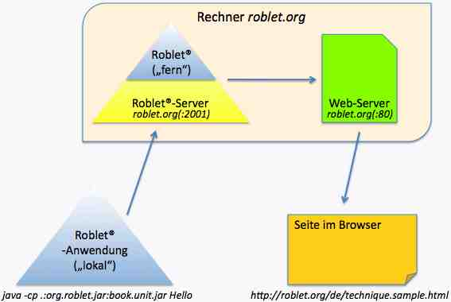

Um den Überblick über die Roblet®-Technik nicht zu trocken werden zu lassen, an dieser Stelle ein (sehr) einfaches Beispiel. Es kann erfahrungsgemäß sogar von Anfängern der Programmiersprache Java™ zum Laufen gebracht werden, ohne daß sie sich vorher durch die Übersicht arbeiten müssen.
Folgende Zeilen sind zunächst in eine Datei namens Hello.java zu bringen:
import book.unit.*; import genRob.genControl.client.*; import java.io.*; import org.roblet.*; public class Hello implements Roblet, Serializable { public static void main (String[] args) throws Exception { new Client (). getServer ("roblet.org"). getSlot (). run (new Hello ()); } public Object execute (Robot robot) { HelloUnit hu = (HelloUnit) robot. getUnit (HelloUnit.class); hu. sayHello (); return null; } }
Alle verwendeten Bibliotheken sind kostenfrei verfügbar und nutzbar.
Vor dem Kompilieren und Ausführen muß sichergestellt sein, daß ein Java™-Development-Kit (JDK) installiert ist. Weiterhin muß die Umgebungsvariable PATH so gesetzt sein, daß die Programme java und javac in einem Unix-Terminal(-Fenster) bzw. einer Windows™-Eingabeaufforderung gefunden werden.
Nun benötigt man das Roblet®-Development-Kit (RDK). Laden Sie sich dort das neueste Paket mit Arbeitsdateien herunter. Das RDK werden Sie auch in Zukunft immer benötigen.
Dann benötigten Sie noch speziell für obiges Beispiel die sogenannten Einheiten des Servers zum Buch (erst einmal nicht weiter darüber nachdenken):
http://roblet.org/book.unit.zip
Das heruntergeladene ZIP-Archiv der Arbeitsdateien des RDK und die Datei book.unit.zip müssen entpackt werden. Merken Sie sich, in welche Verzeichnisse Sie entpacken! Im folgenden wird der Pfad zu den Arbeitsdateien des RDK mit (rdk) und der Pfad zu den Dateien aus book.unit.zip mit (book) bezeichnet. Unter (rdk) findet die Datei org.roblet.jar und einiges andere mehr; unter (book) findet sich mindestens die Datei book.unit.jar.
Nun holen Sie sich ein Terminal (unter Unix, Linux, MacOSX etc.) oder eine Eingabeaufforderung (Windows). Wechseln Sie mit cd in das Verzeichnis, in dem auch die oben angelegte Datei Hello.java zu finden ist. Aus diesem Verzeichnis heraus müssen Sie auch kompilieren und ausführen.
Zum Kompilieren ist unter Unix inkl. MacOSX und Linux folgendes einzugeben (ersetzen Sie (rdk) und (book) passend):
javac -cp .:(rdk)/org.roblet.jar:(book)/book.unit.jar Hello.java
Unter Windows™ ist hingegen folgendes einzugeben (ersetzen Sie (rdk) und (book) passend):
javac -cp .;(rdk)/org.roblet.jar;(book)/book.unit.jar Hello.java
Die beiden obigen Versionen unterscheiden sich lediglich im Zeichen : bzw. ;.
Ausgeführt wird unter Unix inkl. MacOSX und Linux mittels (ersetzen Sie (rdk) und (book) passend):
java -cp .:(rdk)/org.roblet.jar:(book)/book.unit.jar Hello
Unter Windows™ wird ausgeführt mittels (ersetzen Sie (rdk) und (book) passend):
java -cp .;(rdk)/org.roblet.jar;(book)/book.unit.jar Hello
Kompilieren und Ausführen unterscheidet sich dabei nur dadurch, daß javac bzw. java eingesetzt wird. Außerdem gibt man beim Kompilieren den Dateinamen Hello.java an und beim Ausführen nur den Klassennamen Hello.
Lokal auf ihrem Computer wurde main(...) ausgeführt und eine Instanz der Klasse Hello erzeugt. Mit Hilfe des Klienten Client wurde eine Verbindung zum Server aufgebaut und die Instanz von Hello verschickt und dort zur Ausführung gebracht.
Wesentlich und bezeichnend ist, daß die Methode execute(...) auf dem Roblet®-Server roblet.org ausgeführt wird (dieser Server lauscht an Port 2001 und darf nicht mit dem Webserver verwechselt werden, der Ihnen die Webseite geschickt hat, die Sie gerade lesen). Dort wird die Einheit HelloUnit geholt und deren Methode sayHello() genutzt. Die Einheit im Server fügt dann zu der HTML-Seite, die sie nun gerade (möglicherweise in einer älteren Version) lesen, weiter unten im Text eine weitere Zeile hinzu.
Einzelheiten zu den Abläufen finden Sie im online verfügbaren Buch zur Roblet®-Technik. Der Datenfluß von der (lokalen) Anwendung bis zum (lokalen) Browser ist in der nachfolgenden Abbildung erläutert.

Haben Sie das Beispiel laufen lassen, so können Sie die Webseite, die Sie mit Ihrem Browser gerade lesen, neu laden (auffrischen) und eine Ausgabe sollte hier im nachfolgenden Kasten erscheinen:
12.05.2008 10:53:31.466 CEST - Hello World!